1과목: 측지학 및 위성측위시스템
1. 다음 중 지자기 측량의 3요소는?
2. 임의 시간에 GPS 관측을 실시한 결과 PRN7 위성으로부터 수신기로 들어온 L1신호 주파수의 부분주파수가 반파장인 경우, L1신호의 모호정수(ambiguity) N은 얼마인가? (단, L1신호의 파장 λ=19.0㎝ 이며 PRN7 위성과 수신기간의 정확한 거리는 19,000,000.095m 이다.)
3. 지구가 타원형인 증거가 되는 사항에 대한 설명으로 틀린것은?
4. 다음 중 UTM 좌표계에 대한 설명으로 옳은 것은?
5. 그림과 같이 지구상의 한점(A)에서 지구타원체에 대한 법선이 적도면과 이루는 각도를 무엇이라 하는가?
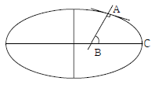
6. 지구의 반지름을 6370㎞라 할 때 거리의 허용오차를 1/106이라 할 경우 평면 측량의 허용범위는?
7. 우리나라의 평 면 직각좌표의 원점은 어떻게 구성되어 있는가?
8. “산지에서 측정된 중력은 표준중력보다 작다.”에서 산지의 지하에 암시 되는 사항에 대한 설명으로 옳은 것은?
9. GPS에서 두 개의 주파수를 사용하는 이유는?
10. 다음 중 DGPS에 대한 설명으로 틀린 것은?
11. 지구의 기하학적 성질에 관계되는 용어에 대한 설명 중 틀린 것은?
12. 다음의 설명 중 옳지 않은 것은?
13. 다음 지자기의 일변화의 원인 중 가장 주된 요인은?
14. 상대측위 방법(간섭계측위)의 설명 중 옳지 않은 것은?
15. 지표면상의 구면 삼각형 △ABC의 세 각을 관측한 결과 A = 51° 30′, B = 65° 45′, C = 64° 35′ 이었다. 구면 삼각형의 면적은? (단, 지구반지름 R = 6,300㎞이며, 측각오차는 없는 것으로 가정한다.)
16. GPS 시스템 오차 원인과 가장 거리가 먼 것은?
17. GPS는 원래 군대에서 사용할 목적으로 개발되었다. 이에 따라 일반인들이 정확한 신호를 얻지 못하도록 원래 신호를 암호화 하여 전송하게 되는데 이것을 무엇이라고 하는 가?
18. 다음 중 인공위성의 궤도 요소에 해당 되지 않는 것은?
19. 다음 중 관성 항법장치에서 획득되는 관측치는?
20. 항공 및 해상 중력관측의 경우 이동중 관측을 실시하게 되므로 관측기기의 속도에 의란 영향을 보정하기 위한 것은?
2과목: 응용측량
21. 노선의 단곡선을 설치하는 방법 중 접선과 현이 이루는 각을 이용하여 설치하는 방법으로 정확도가 비교적 높아 많이 이용되는 방법은?
22. 수애선(水涯線) 및 수애선측량에 관한 설명으로 옳지 않은 것은?
23. 다음 그림과 같은 5각형 토지 ABCDE를 동일 면적의 사각형 토지로 하기 위해 DC의 연장선상에 경계점 F를 설치하고자 한다.
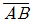
= 40m,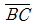
= 25m, ∠ACB=30˚ , ∠BCF = 80˚ 라 할 때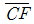
의 거리는?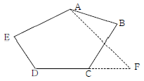
24. 사갱의 고저차를 구하기 위해 측량을 하여 다음 결과를 얻었다. A, B의 고저차는 얼마인가? (단, A점의 기계높와 B점의 시준높이는 천장으로부터 잰 값이다)
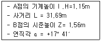
25. 축척 1/50000 지도상의 면적을 잘못하여 축척 1/5000 으로 측정하였더니 40000m2가 나왔다. 실제 면적은?
26. 4각형 ABCD의 좌표가 아래와 같을 때 □ABCD의 면적은?
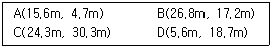
27. 그림과 같이 I=60˚ , R=200m의 구원곡선의 교점 P를 제1접선의 방향으로 30m 이동(P→P′)하고 그에 E라 제2접선도 평행 이동하며 B.C점의 위치는 이동 없이 새로운 원곡선을 설치할 경우 반지름 R′은 몇 m로 하여야 하는가?
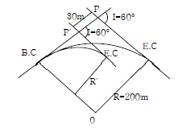
28. 측량결과가 그림과 같을 때 절토량과 성토량이 같게 되는 이 지역의 계획고는? (단, 직사각형의 넓이는 동일하고 토향변화는 고려하지 않는다.)
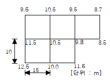
29. 터널 내외 연결측량에 대한 설명으로 잘못된 것은?
30. 지상 및 지하시설물 등에 대한 지도 및 도면 등 제반 정보를 수치 입력하여 효율적으로 운영 관리하는 종합적인 관리체계를 무엇이라 하는가?
31. 지적삼각점 설치를 위한 지적삼각측량에 관한 설명 중 틀린 것은?
32. 노선측량의 곡선의 설치 등에 관한 설명으로 틀린 것은?
33. 완화곡선에 대한 설명 중 잘못된 것은?
34. 지구중심을 향한 깊이 800m의 두 수갱에 대하여 지표에서의 두 수갱간 거리를 600m라 하면 지하 800m에서의 두 수갱간 거리는? (단, 지구의 반지름=6370㎞)
35. 수로가 비교적 직선이고 단면적도 규칙적이며 하상이 편평한 상태에서의 평균유속을 설명한 것 중 맞는 것은?
36. 다음 중 경관의 3요소와 거리가 먼 것은?
37. 고속도로의 완화곡선 설치에는 다음 중 어느 곡선을 많이 이용하는가?
38. 그림과 같이 2중 부자를 이용하여 유속을 관측하고자 할때 평균유속을 직접관측하기 위해서 수면에 있는 부자와 수중에 있는 부자간의 간격( ℓ )으로 적당한 길이는?
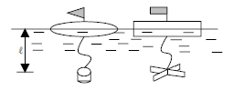
39. 그림에서 R=500m이고, γ=35˚ , β=55˚ 일 때 DA의 길이는? (단, CD의 길이는 200m 이다.)
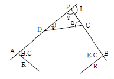
40. 하천측량에서 하천의 수위를 정할 때 어떤 기간을 통하여 관측한 수위 중 이것보다 높은 수위와 낮은 수위의 관측회수가 같은 수위를 무엇이라고 하는가?
3과목: 사진측량 및 원격탐사
41. 다음 중 상호표정 인자가 아닌 것은?
42. 지형지물의 검색, 관리 및 재해방지, 물류, 부동산관리 등 지리정보의 다양한 활용을 위하여 지도상의 핵심 지형지물에 부여하는 고유번호를 무엇이라 하는가?
43. 평지를 촬영고도 4500m에서 촬영한 밀칙사진의 종중복도가 60%, 횡중복도가 30% 일 때, 이 연직사진의 유효모델의 면적은? (단, 사진면의 크기=23㎝×23㎝, 초점거리=150㎜)
44. 지상기준점으로 사용하기 위해 대공표지를 설치하고자 한다. 만약 항공사진기가 초광각 카메라( 화각 : 120˚ )이고, 표정기준점 설치 위치의 주위에 높이가 10m인 건물이 있다면 건물에서 최소 몇 미터 이상 떨어진 곳에 대공표지를 설치해야 하는가?
45. 다음의 인공위성 영상자료 중 공간해상도가 가장 좋은 것은?
46. 촬영보조기재를 크게 촬영조건을 결정하기 위한 것과 항법의 정확도는 높이기 위한 것으로 나눌 때 다음 중 항법의 정확도를 높이기 위한 보조기재는?
47. 다음 사진측량에 관한 설명 중 옳지 않은 것은?
48. 래스터 자료 저장 구조 중 다음 그림과 같은 저장 방법은?
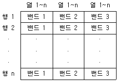
49. 지표면의 비고가 100m인 구릉지를 초점거리 150㎜인 카메라로 연직촬영한 사진의 크기는 23㎝ × 23㎝이다. 촬영축척이 1/20000 일 때 이 사진의 비고에 의한 최대 변위는?
50. 항공사진 또는 위성영상을 지상기준점(GCP)을 이용해 왜곡된 영상의 좌표와 실제 지표 좌표를 연계하여 영상의 좌표를 지도 좌표계와 일치시키는 과정을 무엇이라 하는가?
51. 다음 항공사진의 판독 순서 중 옳은 것은?
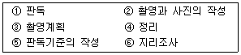
52. 다음 중 디지타이징 작업에서 발생하는 오류가 아닌 것은?
53. 래스터(또는 그리드)저장기법 중 어떤 객체의 경계선을, 그 시작점에서부터 동서남북 방향으로 4방 혹은 8방으로 순차 진행하는 단위 백터를 사용하여 표현하는 방법은?
54. GIS에서 표준화가 필요한 이유를 설명한 것 중 타당하지 않은 것은?
55. 다음 설명의 (A), (B), (C)에 포함되는 용어로 가장 거리가 먼 것은?
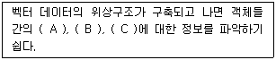
56. 다음 원격탐사 데이터의 유형 중 광학적인 형태의 항공사진과 같이 도화 과정을 통해 지형도 제작에 주로 이용되는 것은 무엇인가?
57. 다음 중 GIS 자료출력용 하드웨어가 아닌 것은?
58. 초점거리가 210㎜, 사진크기 18㎝×18㎝, 종중복도 60% 일때 기선고도비는?
59. 사진상의 주점이나 표정점 등 제점의 위치를 인접한 사진상에 옮기는 작업은?
60. 초점거리 150㎜의 사진기로 고도 3000m에서 종중복도 60%로 촬영했다. 사진의 크기는 23㎝×23㎝, 항공기의 속도가 200㎞/h 라고 하면 최소 노출시간(촬영간격)은 몇 초인가?
4과목: 지리정보시스템
61. 3㎝가 늘어난 50m 줄자를 사용하여 어떤 거리를 측정한 결과 175m를 얻었을 때 실제의 길이는?
62. 다음 다각측량 결과(위거, 경거)에 의한 5각형의 면적은? (단, A점의 합위거 = 0, 합경거 = 0 이고, 단위는 m)
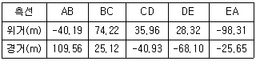
63. ±(5㎜+5ppm ∠)의 정확도를 갖는 광파측거기를 사용한다고 할 때, 2000m의 거리에서 예측되는 표준오차는 얼마인가? (단, ∠:거리, 구심오차는 무시함)
64. 줄자로 거리를 관측할 때 줄자의 정중앙에 초목이 있어 수평으로부터 30㎝ 위로 휘어졌다고 하면 그 원인에 의한 관측 거리 50m에 대한 오차(절대값)는 얼마인가?
65. A, B 2점간의 거리를 같은 광파거리측량기를 사용하여 측정하였다. 이 때에 2점간 거리의 최확값은? (단, 1차 평균 거리 1000.010m, 표준편차 0.006m, 2차 평균 거리 1000.020m, 표준편차 0.002m)
66. 동일한 사람이 20″독과 1′독 트랜싯을 사용하여 각 측량을 하면 그 관측값에 대한 무게(weight: 경중률)의 비는? (단, 기타 조건은 동일한 것으로 가정한다.)
67. 수준측량에서 수평거리 5㎞일 때의 지구의 곡률오차는? (단, 지구의 곡률반경은 6370㎞)
68. 1회 거리측정에서의 정오차가 ε이라고 하면 같은 상황에서 같은 기기로 4회 측정하였을 경우 생기는 정오차의 크기는?
69. 축척 1:10000의 지형도에서 1/22 기울기로 올라가는 도로를 건설하려고 할 때 등고선(주곡선)간의 수평거리는?
70. 트래버스측량에 의하여 가장 정확도가 요구되는 측량에서 사용하여야 할 방법은?
71. 축척 1/5000 의 수치지도에서 산기슭으로부터 정상까지 직선거리를 재어보니 24㎝이며, 산기슭의 표고는 175m, 산정상의 표고는 480m이었다. 이 사면의 경사는 얼마인가?
72. 30m에 대하여 6㎜ 늘어나 있는 줄자로 정방형의 지역을 측량 한 결과 62500m2이었다. 실제면적은?
73. 교호 수준 측량을 실시하여 다음과 같은 결과를 얻었다. 이때 B점의 표고는? (단, 단위는 m이다.)
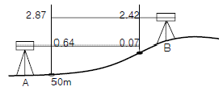
74. 다음 그림과 같은 결합트래버스의 측각오차식은? (단, [a] : 측각(a1~an)의 총합)
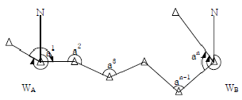
75. 다음 삼각망에서 조건식의 총수는 얼마인가?
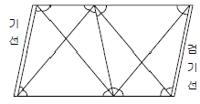
76. 2등 수준측량에서 2㎞ 왕복 수준측량한 결과 25㎜의 오차가 발생했다. 처리하는 방법으로 옳은 것은?
77. 삼각망에 대한 특징을 잘못 설명한 것은?
78. 등고선에 대한 다음 설명 중 틀린 것은?
79. 결합트래버스 측량에 있어서 노선장이 4㎞ 되는 장소에서 폐합비의 제한이 1/500000 일 경우 허용되는 폐합차는 얼마인가?
80. 삼각측량에 있어서 삼각점의 수평위치를 결정하는 요소는 무엇인가?
5과목: 측량학
81. 측량업별 업무 내용에 대한 설명으로 틀린 것은?
82. 다음 중 측량업 등록을 할 수 있는 자는?
83. 기본측량의 성과 중 허가 없이 국외로 반출할 수 있는 경우에 대한 설명으로 옳은 것은?
84. 시ㆍ군ㆍ구지명위원회의 구성으로 옳은 것은?
85. 다음 중 기본 측량에 관한 연간계획을 수립하는 자는?
86. 다음 중 측량법에 정의한 측량계획기관이란?
87. 기본측량의 실시공고에 대한 설명으로 옳은 것은?
88. 측량업자가 폐업한 때의 신고의무에 대한 설명으로 옳은 것은?
89. 공공측량에 대한 정의로 가장 알맞은 것은?
90. 1/25,000 및 1/50,000 지형도 도식적용규정에서 지류의 표시원칙으로 잘못된 것은?
91. 기본측량을 위한 영구표지를 설치할 때에 국토지리정보원장이 행할 사항은?
92. 지형도 도식적용규정의 목적과 가장 거리가 먼 것은?
93. 우리나라의 측량 기준을 설명한 것으로 잘못된 것은?
94. 다음 중 측량법에서 사용하는 용어의 정의로 잘못된 것은?
95. 1/25,000 지형도에서 채택하고 있는 투영방법은?
96. 측량기기 성능검사필증에 기재사항이 아닌 것은?
97. 공공측량의 측량성과와 측량기록의 사본을 교부받고자 할때 신청하는 기관은?
98. 성능검사를 받아야 하는 측량 기기 중 토털스테이션의 성능검사주기는 몇 년인가?
99. 기본측량을 위하여 설치된 측량표를 이전, 손괴, 기타 효용을 해하는 행위를 한 자가 받는 벌칙으로 옳은 것은?
100. 다음 중 중앙지명위원회의 부위원장이 되는 자는?